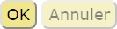
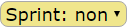

Interface
Voici quelques brèves explications pour jouer les coups :
-
 indiquent les scores et les disponibilités des bonus de sprint pour les deux joueurs.
indiquent les scores et les disponibilités des bonus de sprint pour les deux joueurs.
-
 indique les crédits du joueur actif.
indique les crédits du joueur actif.
-
 confirme ou annule/réinitialise le tour du joueur actif.
-
 sélectionne le bonus de sprint.
-
 indique la possibilité de tirer pendant le tour.
indique la possibilité de tirer pendant le tour.
-
 indique la possibilité de courir pendant le tour.
indique la possibilité de courir pendant le tour.
-
 indique les possibilités de tirer et courir pendant le tour.
indique les possibilités de tirer et courir pendant le tour.
- Désélectionnez le footballeur / balle sélectionné avant de passer à une nouvelle sélection.
Modes de jeu
Voici les modes de jeu :
- Les deux joueurs proches partagent le même navigateur Web.
- Les deux joueurs distants utilisent chacun un navigateur Web.
- Un joueur joue contre une intelligence artificielle (IA).
- Deux IA jouent l'une contre l'autre.
Seul le mode
deux joueurs proches
est actuellement implémenté même si le sélecteur
Humain/IA ...
est affiché à côté du bouton
Nouvelle partie
.
Règles
Accéder aux règles grâce au bouton
Règles
.
Portabilité
BALTEK se joue dans un navigateur Web, et est donc relativement portable. Cependant, son ergonomie actuelle requiert
un écran assez grand et une souris.
L'adaptation de BALTEK au smartphone est prévue dans une autre phase.